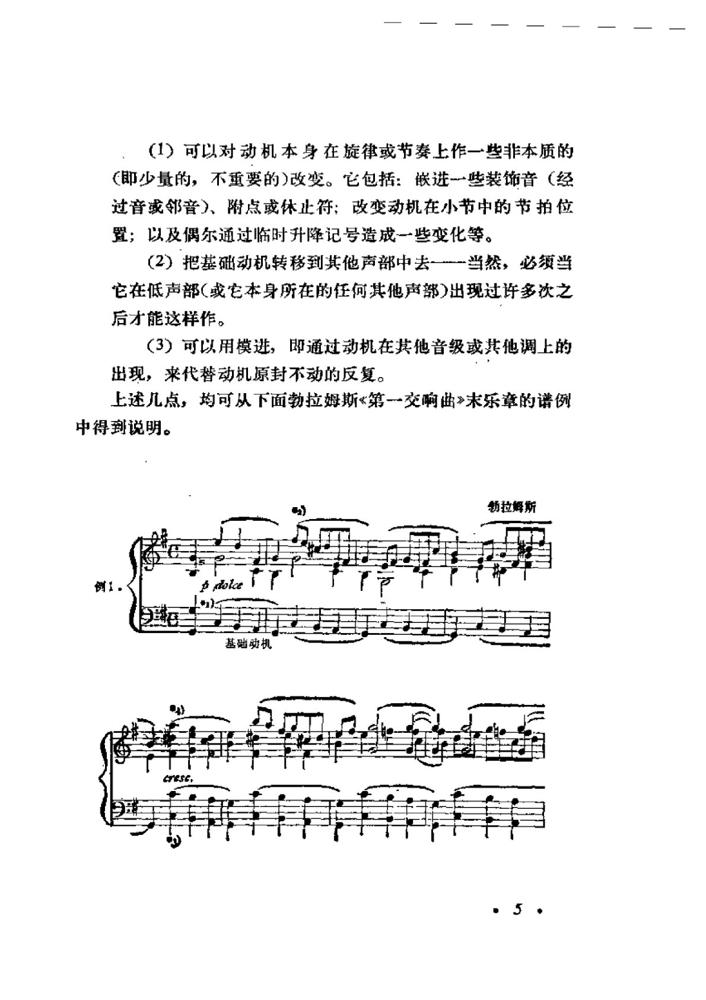

柏西·该丘斯《大型曲式学》
从基础动机、固定低音与大型变奏进入奏鸣、回旋与套曲；重视结构层级、反复与主题处理。
页码为 PDF 物理页。以下仅收录理论手册与案例实际引用的页面；页图保留整版，OCR 文本用于检索，不能替代读谱。
PDF p.4
该丘斯
本页在理论手册中的引用
OCR 检索文本（仅辅助检索，谱例以影印为准）
（1）可以对动机本身在旋律或节奏上作一些非本质的 (即少量的，不重要的)改变。它包括：嵌进一些装饰音（经 过音或邻音）、附点或休止符；改变动机在小节中的节拍位 置；以及偶尔通过临时升降记号造成一些变化等。 （2）把基础动机转移到其他声部中去一-当然，必须当 它在低声部（或它本身所在的任何其他声部）出现过许多次之 后才能这样作。 （3）可以用模进，即通过动机在其他音级或其他调上的 出现，来代替动机原封不动的反复。 上述几点，均可从下面勃拉姆斯<第一交响曲>末乐章的谱例 中得到说明。 勃拉姆斯 例1 基础动机 CrESE,